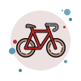

<nav class="shadow-sm px-3 bg-body-tertiary fixed-top">
  <div class=" justify-content-between big_navbar align-items-center pb-2">
    <div class="left-side d-flex align-items-center gap-2">
      
      <h3 class="me-2 title" routerLink="/">Pedalacom</h3>
        <button class="single-link btn" routerLink="/search">Prodotti</button>
        <button class="single-link btn" routerLink="/contacts" >Contatti</button>
        <button class="single-link btn" routerLink="/about" >About Us</button>
    </div>
    <div class="mid-side">
      
      <form class="d-flex" role="search">
        <input #btnSearch class="form-control" type="search" placeholder="Cerca una bici" aria-label="Search">
        <button class="btn btn-outline-success btn-cerca" (click)="redirect(btnSearch.value)" routerLinkActive="router-link-active"  type="submit">Cerca</button>
      </form>
      
    </div>
    <div class="right-side d-flex">
      <!-- <button class="btn" style="font-size: 1.3em;">
        <i class="fa-solid fa-user"></i>
      </button> -->
      <!--  -->
      <a class="nav-link btn" role="button" data-bs-toggle="dropdown" aria-expanded="false">
        <button (click)="checkLogged()" class="btn" style="font-size: 1.3em;">
          <i class="fa-solid fa-user nav-icon"></i>
        </button>
      </a>
      <ul class="dropdown-menu">
        <div *ngIf="userLogged; then Ok else Ko"></div>
        <ng-template #Ok>
          <button type="submit"(click)="logout()" class="btn" style="width: 100%;">Logout</button>
          <br>
          <button *ngIf="userAdmin" class="btn" routerLink="/admin" style="width: 100%;">Admin</button>
          <!-- <button *ngIf="userAdmin"><a class="btn" routerLink="/admin">Admin</a></button> -->
        </ng-template>
        <ng-template #Ko>
          <li><a class="dropdown-item" routerLink="/login">Accedi</a></li>
          <li><a class="dropdown-item" routerLink="/register">Registrati</a></li>    
        </ng-template>
      </ul>
      <a class="btn" style="font-size: 1.3em;" routerLink="/cart">
        <i class="fa-solid fa-cart-shopping nav-icon" ></i>
      </a>
    </div>
  </div>
  <!-- SMALL NAVABR  -->
  <div class="small_navbar justify-content-between">
    <div class="left-small-side">
      <button class="btn" style="font-size: 2em;" type="button" data-bs-toggle="offcanvas" data-bs-target="#offcanvasExample" aria-controls="offcanvasExample">
        <i class="fa-solid fa-bars"></i>
      </button>
      
      <div class="offcanvas offcanvas-start" tabindex="-1" id="offcanvasExample" aria-labelledby="offcanvasExampleLabel">
        <div class="offcanvas-header">
          <div class="offcanvas-title" id="offcanvasExampleLabel" routerLink="/" data-bs-dismiss="offcanvas">Pedalacom</div>
          <button type="button" class="btn-close" data-bs-dismiss="offcanvas" aria-label="Close"></button>
        </div>
        <div class="offcanvas-body">
          <div class="link-small d-flex align-items-center flex-column">
            <div class="btn-container">
              <div #btn1 class="single-link-small btn fade-out" [style.opacity]="managementFade ? '0' : '1'" routerLink="/" data-bs-dismiss="offcanvas">Home</div>
              <div #btn2 class="single-link-small btn fade-out" [style.opacity]="managementFade ? '0' : '1'" routerLink="/search" data-bs-dismiss="offcanvas">Prodotti</div>
              <div #btn3 class="single-link-small btn fade-out" [style.opacity]="managementFade ? '0' : '1'" routerLink="/contacts"  data-bs-dismiss="offcanvas">Contatti</div>
              <div #btn4 class="single-link-small btn fade-out d-none" [style.opacity]="!managementFade ? '0' : '1'" routerLink="/register"  data-bs-dismiss="offcanvas">Registrati</div>
              <div #btn5 class="single-link-small btn fade-out d-none" [style.opacity]="!managementFade ? '0' : '1'" routerLink="/login"  data-bs-dismiss="offcanvas">Login</div>
              <div #btn6 class="single-link-small btn fade-out d-none" [style.opacity]="!managementFade ? '0' : '1'" (click)="logout()"  data-bs-dismiss="offcanvas">Logout</div>
              <div #btn7 class="single-link-small btn fade-out d-none" [style.opacity]="!managementFade ? '0' : '1'" routerLink="/admin"  data-bs-dismiss="offcanvas">Admin</div>
            </div>
            <div class="d-flex">
              <button class="btn" style="font-size: 1.5em;" (click)="toggleFade(btn1, btn2, btn3, btn4, btn5, btn6, btn7)">
                <i *ngIf="!changeModal" class="fa-solid fa-user"></i> <i *ngIf="changeModal" class="fa-solid fa-left-long"></i>
              </button>
              <button class="btn" style="font-size: 1.5em;" routerLink="/cart" data-bs-dismiss="offcanvas">
                <i class="fa-solid fa-cart-shopping"></i>
              </button>
            </div>
          </div>
        </div>
      </div>
    </div>
    <div *ngIf="!activeSearch" class="mid-small-size" >
      <button class="btn" style="font-size: 2em;" routerLink="/">
        
      </button>
    </div>
    <div *ngIf="!activeSearch" class="right-small-size">
      <button (click)="changeActiveSearch()" class="btn" style="font-size: 2em;">
        <i class="fa-solid fa-magnifying-glass"></i>
      </button>
    </div>
    <form *ngIf="activeSearch" class="d-flex p-2" role="search">
      <input #btnSearch class="form-control" type="search" placeholder="Cerca una bici" aria-label="Search">
      <button class="btn btn-outline-success btn-cerca" (click)="redirect(btnSearch.value)" routerLinkActive="router-link-active"  type="submit">Cerca</button>
    </form>
  </div>
</nav>
